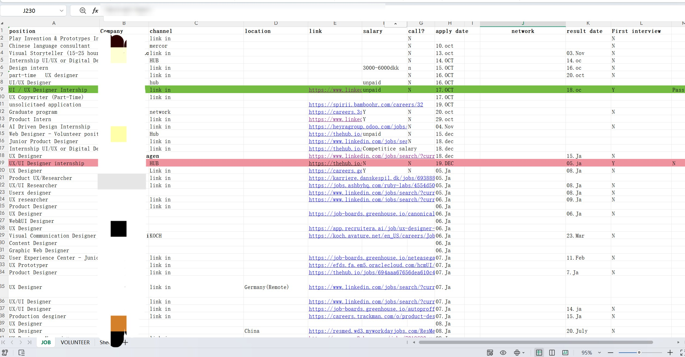
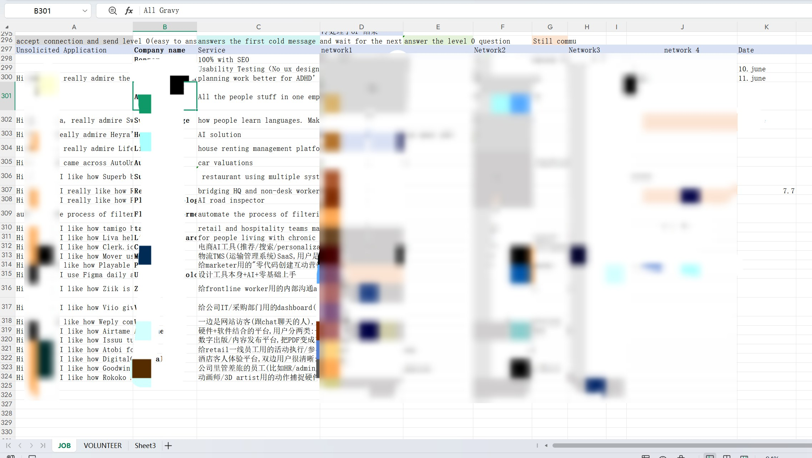
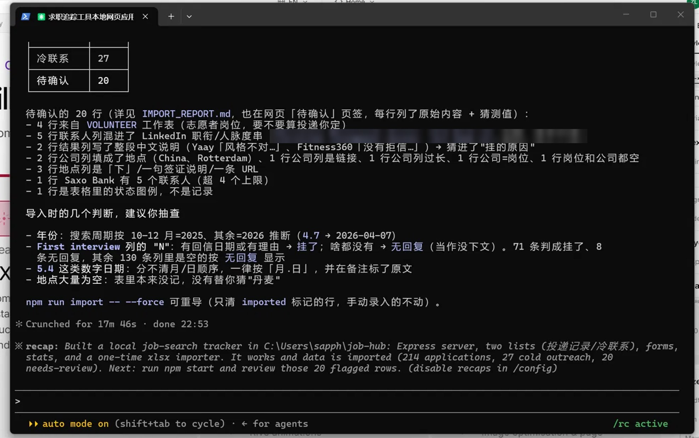
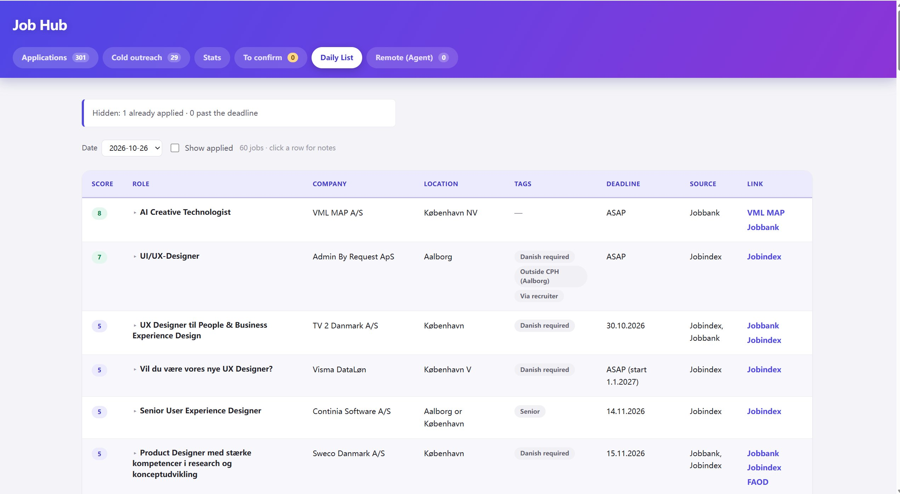
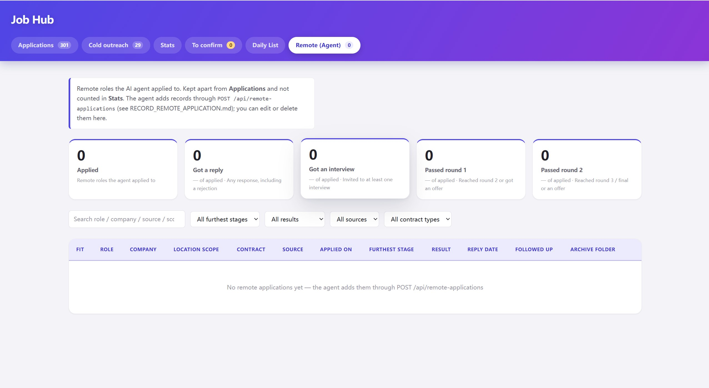

Job Hub
I designed a tool for my own job search, and built it with Claude Code. It started as a simple tracker. It grew step by step, from problems I found while using it.
My job search data was a mess
I tracked my job search in one Excel file. I used colors to show the status of each application. To know my reply rate, I had to count by hand. And I looked for jobs in two ways: applying to jobs that companies posted, and sending unsolicited applications to small Danish companies (cold outreach). Both were mixed in the same file. Over a few months, it became a mess.
So I couldn't answer a simple question: is cold outreach actually working better than applying to posted roles? I'd have to read through 300+ rows by hand just to find out.


Planning the structure before building anything
Before I touched any tool, I planned the structure myself. This part is mine — it doesn't depend on which tool builds it later. I split the tracker into two separate lists instead of one big table, because applications and cold outreach work differently and need different information.
List 1 — Applications
- Role, company, location, application link, date applied
- Contacts (up to 4 per company, each with their own note — so I can remember things like "this conversation stopped after this point")
- Passed round 1 (yes / no)
- Reply date, current stage, reason for rejection (if I know it)
List 2 — Cold Outreach (small Danish startups)
- Company name, what they do
- Contact date (when I first messaged them on LinkedIn)
- The message I sent
- Contacts (can be more than one per company, each with their own note on whether they replied)
Splitting it this way — two lists, with contacts as their own small list inside each row — was a design decision, not a coding one. It's the reason the finished tool made sense right away, instead of needing to be rebuilt later.
I also gave the AI a clear rule: if some information is unclear or missing, it can't decide by itself. It puts it in a list called "To confirm", and I make the decision. For example, if I forgot the date I applied, the AI can't make it up. It waits for me.
Building it with Claude Code
Once I had the structure, I used Claude Code to actually build the app — a simple backend and a web page I can open on my computer. I gave it the two lists above, along with my old spreadsheet, and one clear rule: if a row was unclear, flag it for me to check by hand instead of guessing.


Turning messy rows into a tool I actually use
After importing my data, I also had Claude Code clean up how the app looked. Now it's something I check every day — not a spreadsheet I avoid opening.


Now I don't count anything by hand. The tool does it for me. I can see at a glance which step of my job search has a problem. And in the first import, 20 unclear rows went to "To confirm". I checked them myself, so the AI never filled in anything by guessing.
From bar charts to a funnel
I needed to see where my job search went wrong. Was it my CV, or my interviews? My first Stats page only showed basic numbers, so I couldn't see where things stopped. So I changed it to a funnel. Now I can see which step has the problem, and what to improve. I can also look at full-time, internship and part-time jobs one by one.


Letting AI find jobs for me
Some jobs are not on LinkedIn, only on company websites. So I added a Daily List. AI searches for jobs that match me, like UX/UI or web design, and gives each one a score. Not more jobs, better jobs. It also shows things I care about, like "Danish required", "Senior", and the deadline.

A remote agent (in progress)
Now I'm building an agent that applies to remote jobs that match me well. It's still in testing. I keep these jobs separate from the jobs I apply to myself. In Stats, they have their own column, so I can compare the two ways of applying.

What I learned
AI can help people build what they need, very fast. But a person always makes the decisions. AI is strong, but it doesn't get it right the first time. So I keep improving it: I give new instructions, I check the result, and I send back what to fix. Step by step, it gets really good.